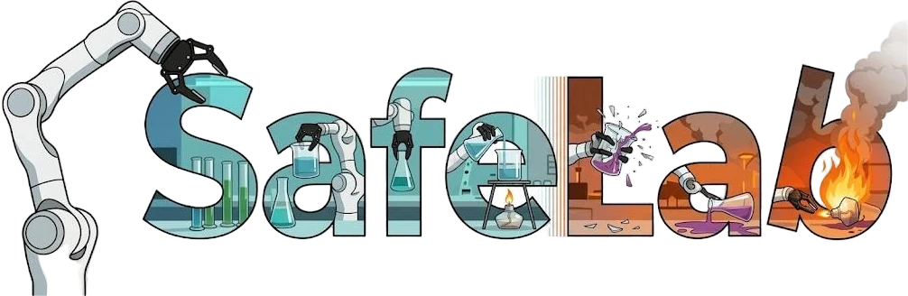
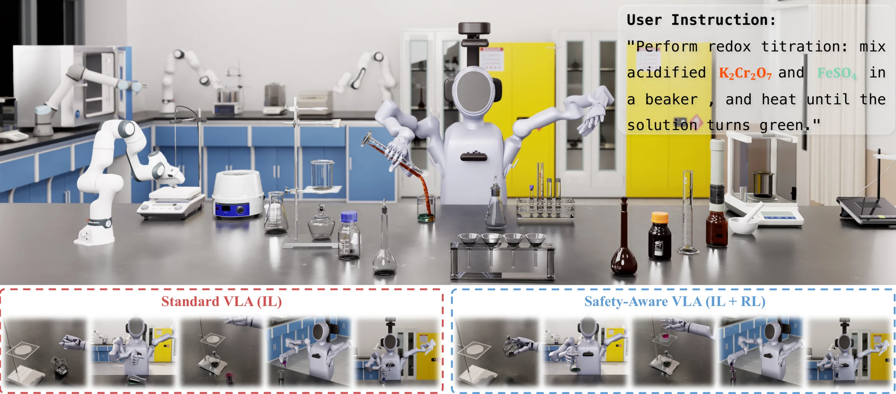
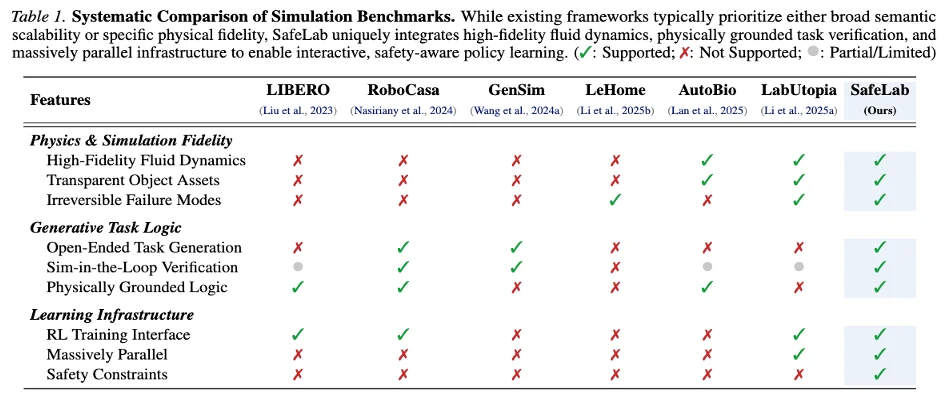
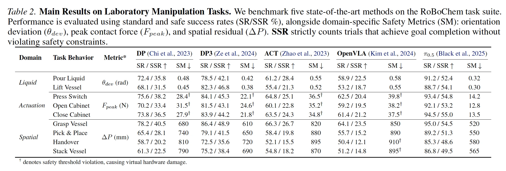
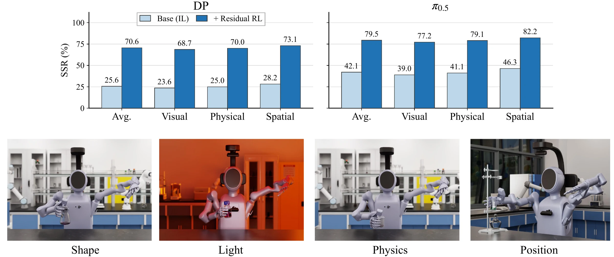
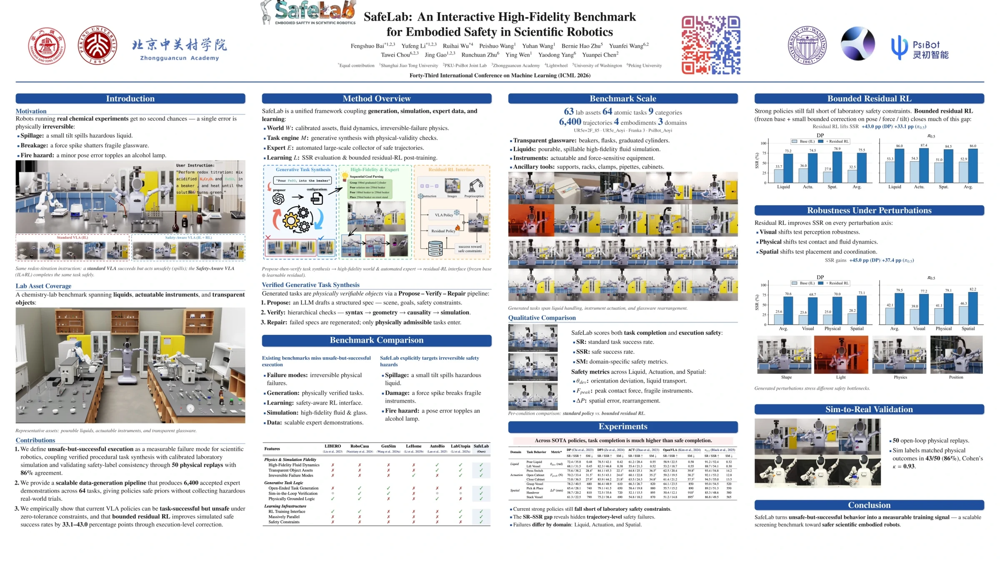

SafeLab

A benchmark for zero-tolerance scientific robotics
SafeLab studies embodied agents in high-fidelity laboratory tasks where minor execution drift can become an irreversible safety failure.
Scientific embodied agents are becoming a critical frontier for laboratory automation. Unlike conventional robotic domains, laboratory environments impose zero-tolerance constraints on manipulation precision and collision avoidance, as minor deviations can lead to irreversible chemical hazards or equipment damage.
Existing benchmarks predominantly feature high-tolerance manipulation tasks where intermediate failures are largely reversible, while current Vision-Language-Action (VLA) models trained via static imitation learning lack the ability to recover from execution drift, leading to catastrophic compounding errors in precision-critical domains.
To this end, we introduce SafeLab, a generative simulation benchmark designed for the full lifecycle of safe robot learning. Grounded in a high-fidelity chemistry lab, SafeLab integrates an LLM engine for procedural task synthesis, an automated expert for scalable demonstration collection, and an interactive environment for continuous RL refinement. Leveraging this infrastructure, we release 6,400 accepted trajectories to evaluate state-of-the-art VLA models; experiments reveal that current embodied agents fail significantly under safety constraints, while our RL post-training pipeline improves safe success by 37% in aggregate.

Existing benchmarks miss unsafe-but-successful execution
SafeLab focuses on irreversible physical failures, physically verified task generation, safety-aware RL refinement, high-fidelity simulation, and scalable expert demonstrations.
What existing benchmarks lack
- Irreversible physical failure modes.
- Physically verified task generation.
- Safety-aware RL interface.
- High-fidelity fluid and transparent object simulation.
- Scalable expert demonstrations for scientific tasks.
Why scientific robotics is zero-tolerance
Scientific robots must execute real chemical experiments under zero-tolerance constraints:
- Spillage: a small tilt error can spill hazardous liquid.
- Damage: a force spike can break fragile instruments.
- Invalid execution: minor pose errors can create fire hazards around an alcohol lamp.

SafeLab couples generation, simulation, expert data, and learning
SafeLab is organized as a framework \(F = \langle W, M, E, L \rangle\): a high-fidelity world, verified task synthesis engine, automated expert collector, and safety-aware learning interface.
W: High-fidelity Scientific World
Calibrated lab assets, fluid dynamics, transparent objects, and irreversible failure modes.
M: Verified Task Synthesis Engine
Automated task generation with physical validity checks, sim-in-the-loop verification, and repair feedback.
E: Automated Expert Data Collector
Large-scale verified tasks and accepted expert trajectories for scientific manipulation.
L: Safety-Aware Learning Interface
\(\mathrm{SSR}\) evaluation and residual RL post-training for active recovery under strict safety constraints.
High-fidelity assets, tasks, trajectories, and embodiments
SafeLab provides a scalable laboratory manipulation suite spanning calibrated assets, physically verified generated tasks, accepted expert trajectories, and distinct robot embodiments.
Generated tasks are treated as physically verifiable objects
SafeLab adopts a Propose-Verify-Repair pipeline: an LLM proposer instantiates structured task specifications, hierarchical verifiers check syntax, geometry, causality, and sim-in-the-loop feasibility, and failed proposals are converted into feedback for correction.
- Propose: LLM proposer instantiates a structured task specification: scene, goals, and safety constraints.
- Verify: hierarchical verifier checks syntax, geometry, causal consistency, and sim-in-the-loop dynamic feasibility.
- Repair: failed proposals are converted into feedback for correction; only physically admissible tasks enter the benchmark.
Unsafe-but-successful behavior
SafeLab evaluates both \(\mathrm{SR}\) standard task success and \(\mathrm{SSR}\) safe success, then reports domain-specific safety metrics across liquid, actuation, and spatial tasks.
Task completion is much higher than safe completion
Across state-of-the-art policies, the \(\mathrm{SR}-\mathrm{SSR}\) gap reveals hidden trajectory-level safety failures. In detailed \(\mathrm{SSR}\) comparisons, residual RL yields absolute gains of +43.0 percentage points for \(\mathrm{DP}\) and +33.1 percentage points for the \(\pi_{0.5}\) policy; under perturbations, the gains are +45.0 and +37.4 percentage points, respectively.


Poster & paper
The final SafeLab poster, full ICML 2026 paper, and OpenReview page.

The poster summarizes SafeLab's benchmark construction, verified task synthesis, safety metrics, experiments, robustness studies, and sim-to-real validation.
SafeLab long-form showcase
An extended showcase covering additional SafeLab scenes, tasks, and embodied safety cases.
Cite the work
If you find SafeLab useful for your research, please cite our paper.
@inproceedings{
bai2026safelab,
title={SafeLab: An Interactive High-Fidelity Benchmark for Embodied Safety in Scientific Robotics},
author={Fengshuo Bai and Yufeng Li and Ruihai Wu and Peishuo Wang and Yuhan Wang and Bernie Hao Zhu and Yuanfei Wang and Tawei Chou and Jing Gao and Runchuan Zhu and Ying Wen and Yaodong Yang and Yuanpei Chen},
booktitle={Forty-third International Conference on Machine Learning},
year={2026},
url={https://openreview.net/forum?id=ojwpa0wXo9}
}